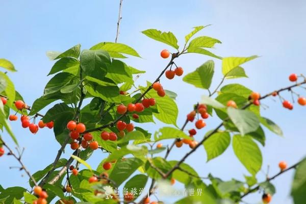
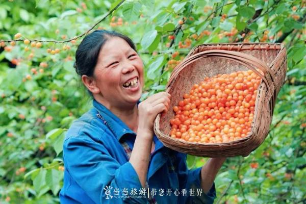
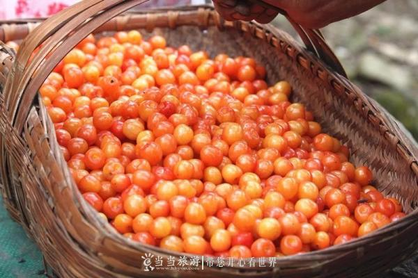
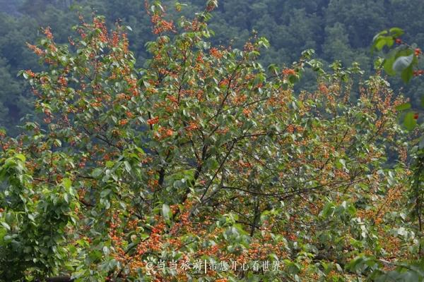
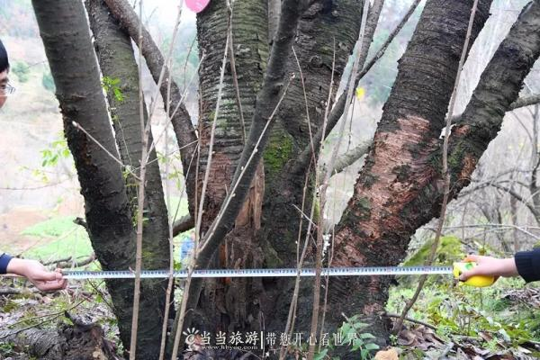
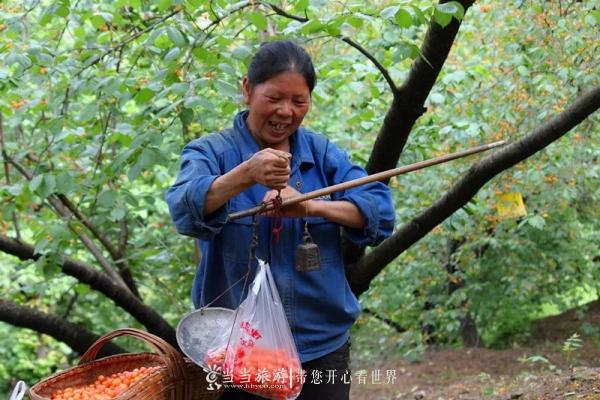

今年汉江街办将为大家打造一场“萌”味十足的樱桃节，让你在欣赏丰富多彩的节目之余，肆意吃樱桃！
张湾汉江街办的国标樱桃马上就要成熟了，一场舌尖上的狂欢即将来袭。
它被誉为“国标樱桃”
 张湾汉江樱桃生长在汉江流域中上游河谷丘陵地带，土壤属黄棕壤，土层深厚，养分含量丰富，独特的土壤环境保证了张湾汉江樱桃的优良品质。
张湾汉江樱桃具有明显的地域特征，橙黄色或红色，果皮薄，果肉淡黄色，质地细软，风味浓郁，味甜爽口。
张湾区城市管理综合执法局在此劝告广大市民朋友，市政道路施划的临时车位，属于公共资源，任何单位和个人不得擅自公共场设置地锁等装置。近期张湾区综合执法局将加大对此类违规行为的巡查和查处力度，方便广大市民规范停车。
它具有悠久的种植历史
张湾汉江樱桃种植历史在百年之久，遍布柳家河村、茅坪村、梁家沟村、凤凰沟村、刘家沟村5个村今年挂果的樱桃树达数万株。
在柳家河村有不少树龄超过50年的樱桃母树，随处可见老树发新枝，甚至“四代同堂”樱桃树。在曲家洼，小编看到一棵樱桃树直径达100cm。当地村民介绍，在他爷爷在的时候就有这棵树，预计树龄约80—90岁，并且不断有新的枝叶从树根长出，呈现出一片勃勃生机。
它是果农们脸上的笑意
在柳家河村有不少树龄超过50年的樱桃母树，随处可见老树发新枝，甚至“四代同堂”樱桃树。在曲家洼，小编看到一棵樱桃树直径达100cm。当地村民介绍，在他爷爷在的时候就有这棵树，预计树龄约80—90岁，并且不断有新的枝叶从树根长出，呈现出一片勃勃生机。
张湾区汉江街办辖区内，几乎家家户户都种植有樱桃树。樱桃种植户1690户，种植面积达6000亩，年产樱桃约4800吨，产值3000万元左右。樱桃长廊已基本形成在带动樱桃产业发展的同时，成立了快活岭樱桃专业合作社和十堰市茅盛果蔬专业合作社。通过帮扶结对子，引进爱心企业家帮助农户户均增收1.78万元。樱桃产业带来的收入成为当地农户重要的经济来源之一。